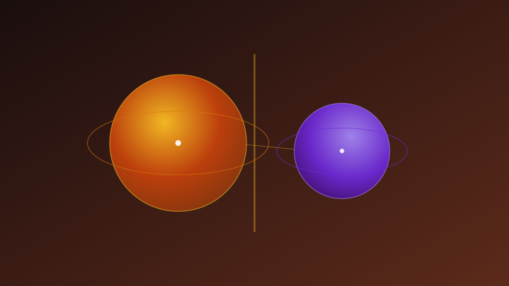
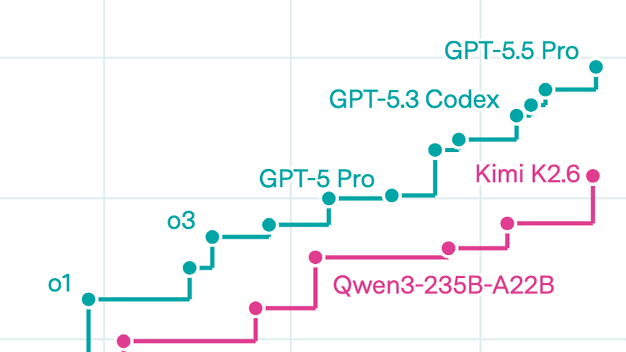
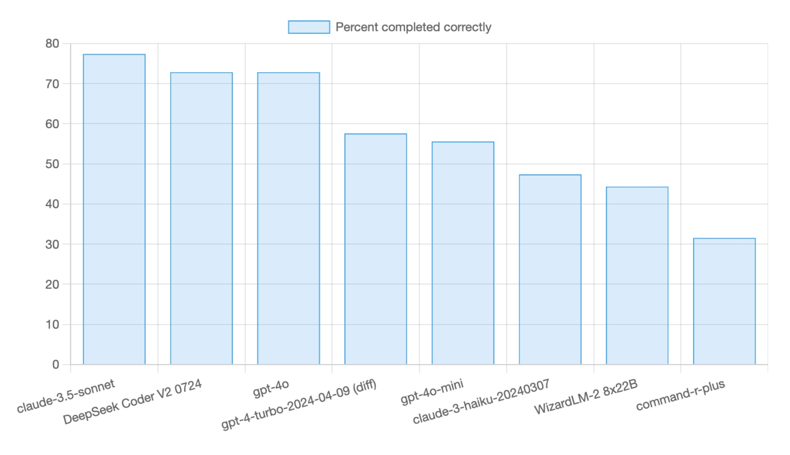

| Benchmark | Frontier leader | Best open | Gap |
|---|---|---|---|
| Epoch ECI (time) | closed frontier | ~4 months behind [28] | widening |
| AA Intelligence Index | 61.4 (Opus 4.8) [7] | 51 (GLM-5.1) [31] | 6 pts |
| LMArena Elo | 1506 (GPT-5.5-high) [32] | 1467 (GLM-5.1 / DSV4-Pro) [32] | 39 Elo |
| SWE-bench Verified | 88.6% (Opus 4.8) [8] | 60.5% (Nemotron 3 120B) [29] | ~27 pts ⚠ |
| Reasoning benches (avg) | frontier | open | 3–8 pts ↓ |
| LiveCodeBench | >85% (GPT-5.2 / Opus 4.5) [33] | GLM-4.7 Thinking [33] | small |
| Aider polyglot | GPT-5 ~0.880 / Opus 4.6 82.1% [34] | open — trails Go/Rust/Java [34] | lang-dependent |


| Factor | Local wins when… | Frontier wins when… |
|---|---|---|
| Cost | Sustained ≥500K tok/day at ≥70% GPU util [41][42] | Spiky or low volume; idle time is free [2] |
| Privacy | PHI, GDPR, air-gapped — VPC self-host is clean [3][5] | Data permitted to leave org; BAA in place |
| Capability | "Good enough" tier — most day-to-day tasks [29] | Hard refactors, intensive reasoning, long-horizon agents [44] |
| Latency | Agentic loops (10–30 API calls × round-trips compound) [6] | Single-shot tasks; no local hardware available |
| Fine-tuning | Need full SFT / LoRA / custom RLHF [4] | Prompt-engineering is sufficient |
| Lock-in | Want portability; vendors swing latency 42% mid-quarter [6] | Managed-vendor dependency is acceptable [4] |